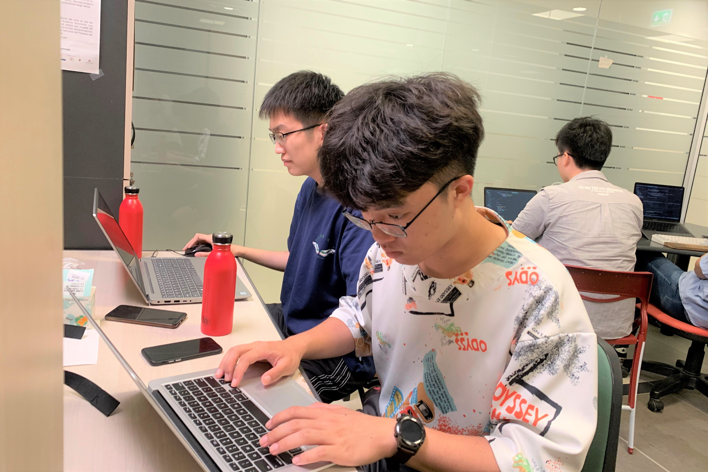
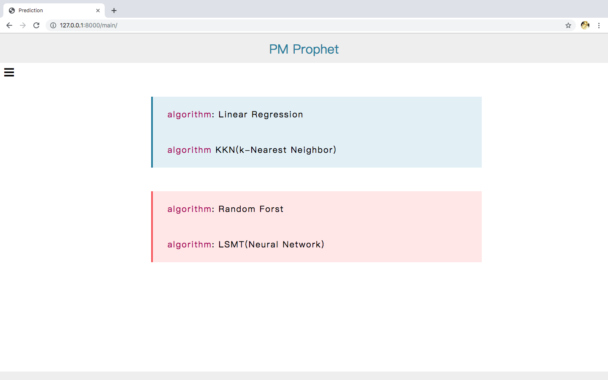
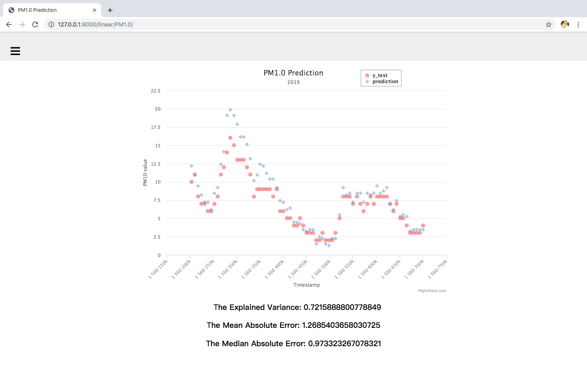
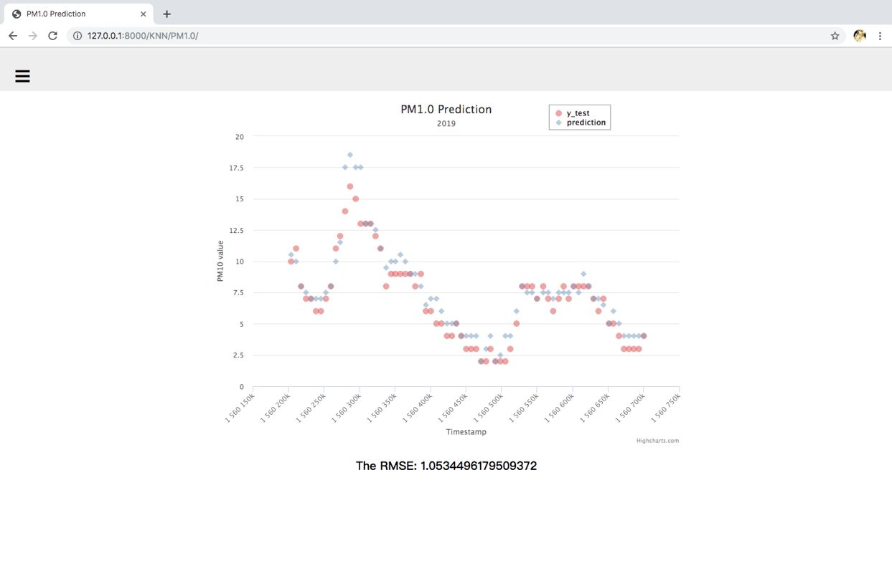

PM Prophet
Advisors
Prof. Giovanni Pau, Prof. Rita Tse, Prof. Silvia Mirri
Members
Derek Dong, Ferdinand Yang
Prof. Giovanni Pau, Prof. Rita Tse, Prof. Silvia Mirri
Derek Dong, Ferdinand Yang
Designing/Developing an AI application to predict PM and CO2 values and other environmental data (temperature, relative humidity, etc.), on the basis of values recorded through a CanarinII sensor outside the campus area.
Data prediction, Sensors
Using different kinds of algorithms to build prediction models.
Showing results of comparisons between true values and prediction values by data visualization.
Obtain data from the sensors and store data as csv data format. Due to certain data lost, delete blank columns and data which lack certain values. Next, Separate data to two parts (test data and train data) according to different values of the Node.
There are four different prediction models.
First, Find out correlation values between predicted factor and other factors. Next, Select strong interpretation from correlation values. Also, use OLS (ordinary least squares) to inspect whether the model is least risked by overfitting. Then, using train data to train the model. Finally, Get prediction value.
First, Set neighbor parameters. Secondly, importing these parameters to establish the model by using these functions, KNeighborsRegressor and GridSearchCV. Thirdly, using train data to train the model. Fourthly, get prediction values and rms which is used to inspect the accuracy of the prediction values.
Invoke the function, GridSearchCV, to build up prediction models. There're five important parameters in this function. So, to get accurate prediction values, five best parameters should be found. What's more, invoke the function, RandomForestClassifer, to show the result.
Set up the first layer neural network which has fifty units. Furthermore, add another layer neural network above it. Then, using train data to train the model. Finally, get the prediction values.
Use Django frameworks to establish a website
Invoke the demo from HighChats and import prediction values and test data to the demo.
Website:
 Figure 1Data visualization (use PM1.0 as an example):
Linear Regression
 Figure 2KNN
 Figure 3Advantages: It is simple and it can reduce overfitting
Disadvantages: It may cause under-fitting and only models relationships between dependent and independent variables that are linear
Advantages: It’s an ensemble method in which a classifier is constructed by combining several different Independent base classifiers. Also, it is the best split feature from a random subset of available features.
Disadvantages: it is too complex which may cause much time-consuming. What's more, 'the best parameters' can be gotten under the previous situation. So, it may be not the best parameters.
According to this project, we have learnt about the knowledge of machine learning. From the knowledge, we have learnt four different ways to build up prediction models and other algorithms. Furthermore, we have leant advantages and disadvantages of different prediction models. Therefore, when we predict other elements next time, we can use the most suitable model according to the situation.